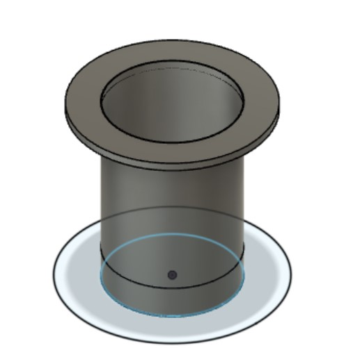
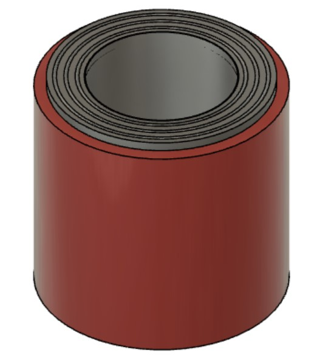
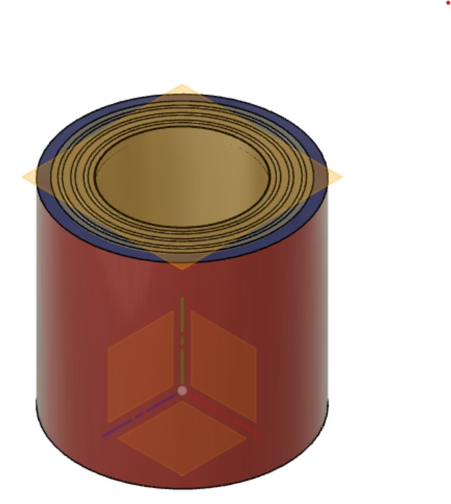
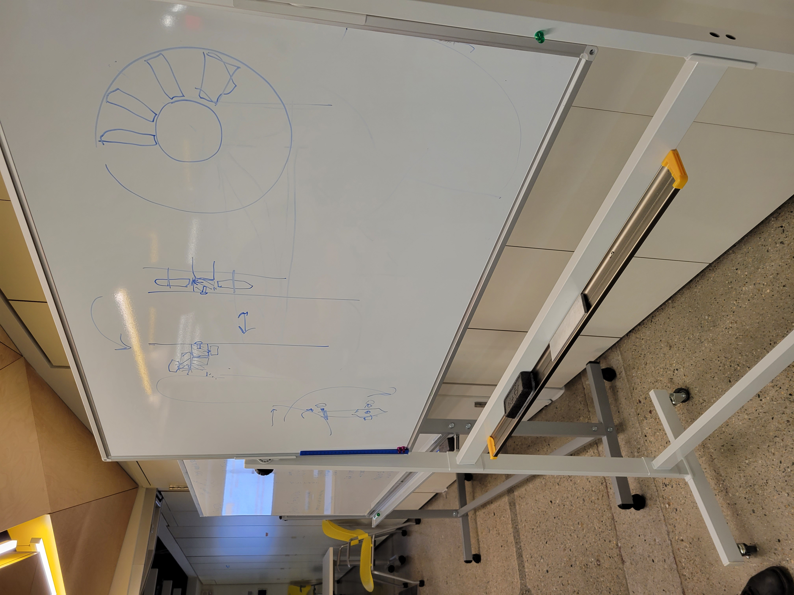
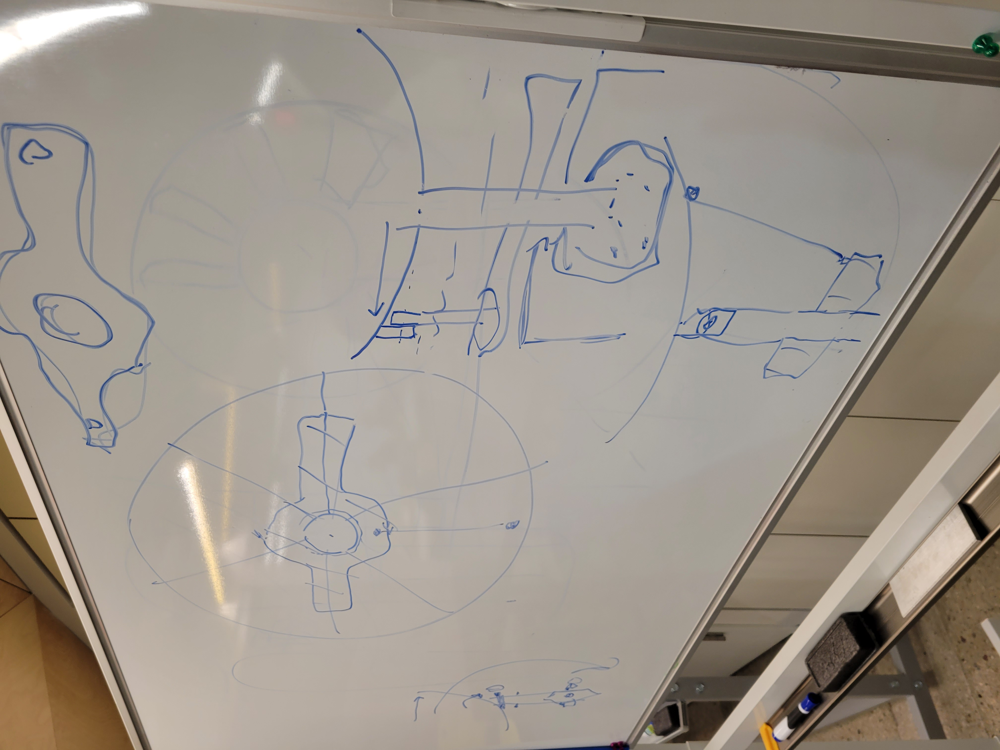

## Week 10
### Monday-Nov 14
On this Monday, I continued my CADing work in Fusion 360 from last week (pictures below), and additionally, Christine and I talked to Justin about alternative ways of thinking about the design for the light pipe and drum connection with some sketches provided below. The design focused on joints on the side of the dish as support with a specifically shaped platform below.





### Wednesday-Nov 16
Continued CADing and working on the drum design. Talked with Nathan about Justin's suggestions on Monday, and overall, the progress was steady. We also figured out the kinds of casters we would use for the top platform.